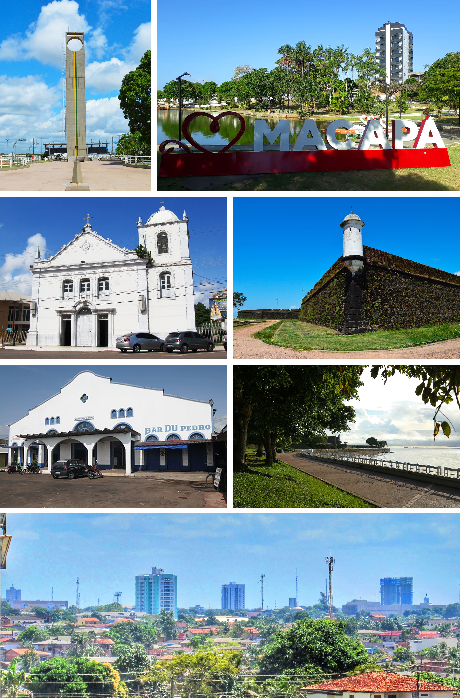
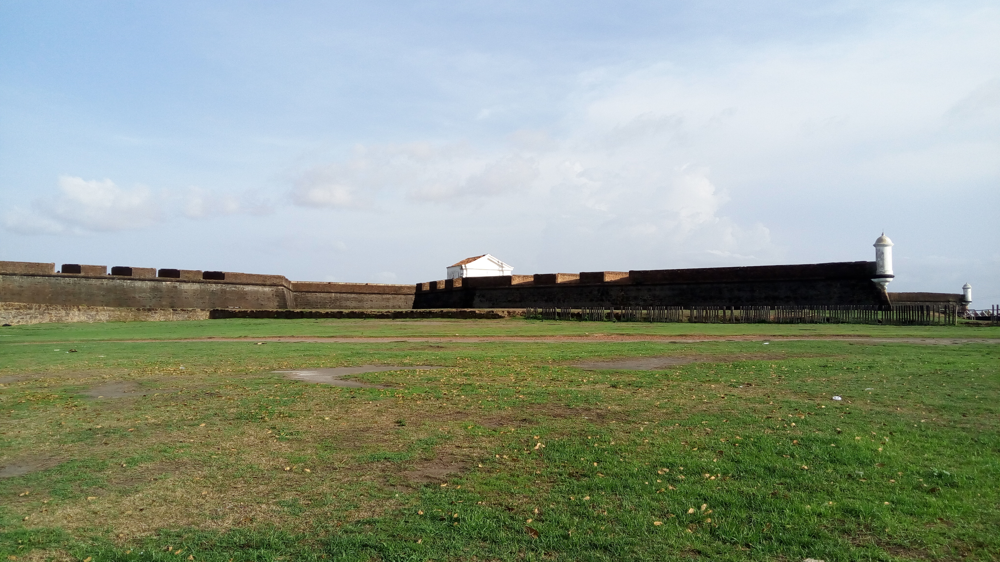
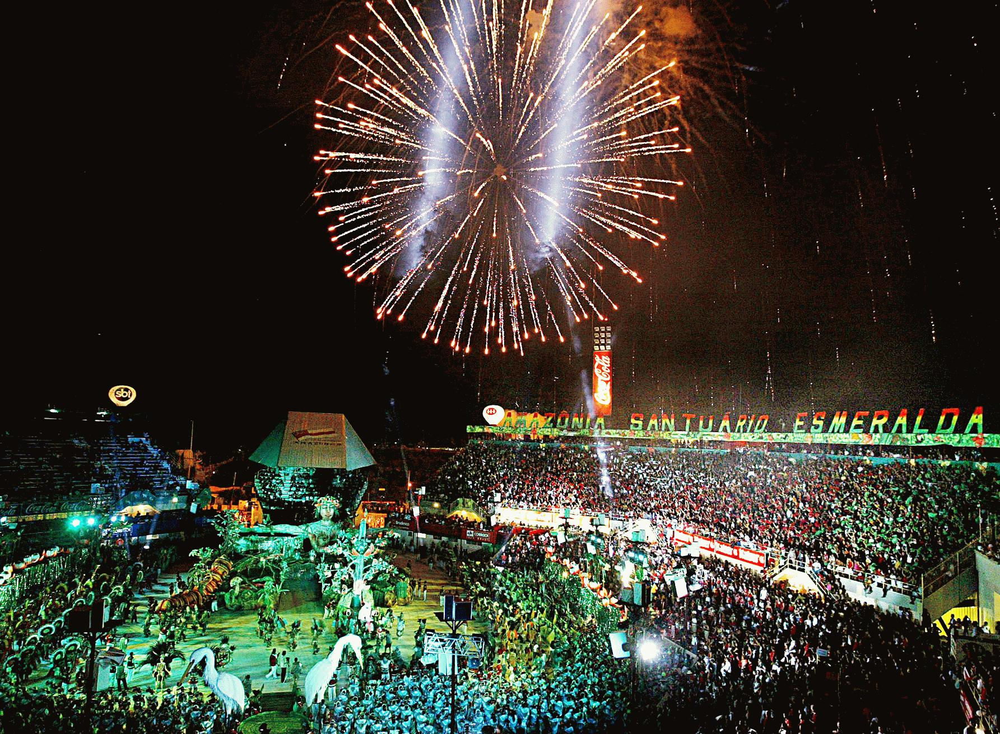
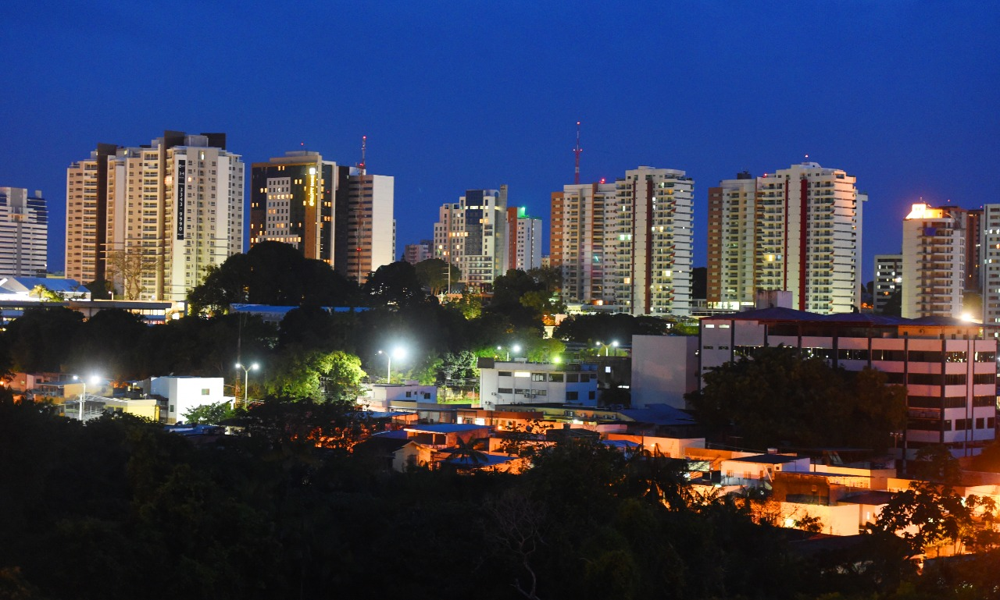
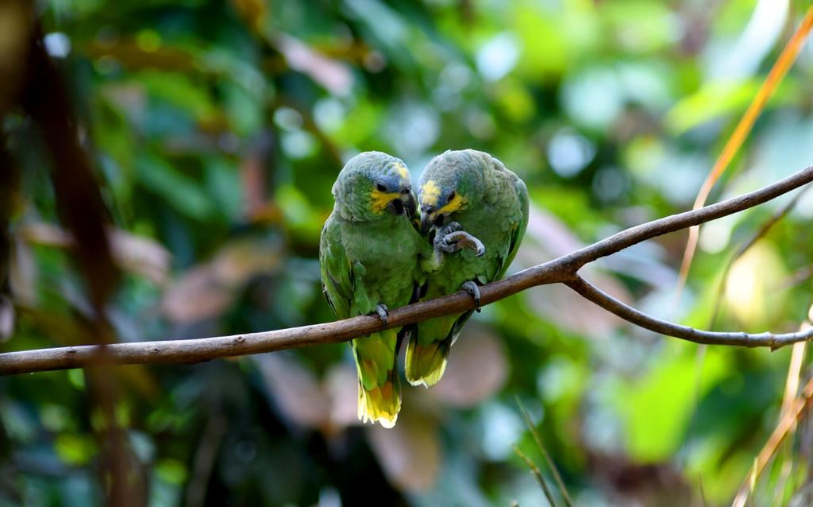

Na linha do Equador, onde a floresta encontra o oceano. O Amapá é um dos estados mais preservados do Brasil — 72% de seu território são áreas protegidas — e tem a capital cortada pela linha imaginária que divide o planeta.

Macapá é uma das raras capitais do mundo cortadas pela linha do Equador. O Marco Zero do Equador fica na cidade, e o estádio de futebol Zerão tem a linha exatamente no meio do campo — cada time joga num hemisfério diferente. Capital do estado mais preservado do Brasil, com acesso ao oceano Atlântico e ao Rio Amazonas.
O ponto exato onde a linha do Equador passa por Macapá. Um monumento simples mas de significado geográfico único — você pisa literalmente na divisão entre os hemisférios norte e sul do planeta.

CulturaA maior fortaleza portuguesa construída no Brasil, finalizada em 1782 para defender o estuário do Amazonas. Preservada e aberta à visitação, com vista para o Rio Amazonas e o pôr do sol mais bonito da cidade.

GastronomiaO caranguejo-uçá do Amapá é considerado o maior e mais saboroso do Brasil. O festival anual transforma Macapá numa festa gastronômica — caranguejos cozidos, na casca, temperados com limão e pimenta.
 Natureza
NaturezaA maior pororoca do mundo ocorre no Rio Araguari, no Amapá. A maré oceânica invade o rio com ondas de até 4 metros que avançam dezenas de quilômetros. Espetáculo sonoro e visual único.
72% do território do Amapá são unidades de conservação ou terras indígenas. É o estado com menor índice de desmatamento do Brasil — um modelo para o mundo de desenvolvimento sustentável na Amazônia.
O Amapá tem grandes reservas de manganês e ouro. A mineração sustentável, com respeito às áreas protegidas, é um dos maiores desafios e oportunidades da economia amapaense.
A pesca artesanal e a extração de açaí são as principais atividades das comunidades ribeirinhas. O açaí do Amapá é colhido em várzeas preservadas e exportado principalmente para o Sudeste.
Oiapoque fica na fronteira do Brasil com a Guiana Francesa — portanto, com a França e com a União Europeia. A Ponte Binacional Oiapoque-Saint-Georges conecta o Brasil à Europa pelo único acesso terrestre. É o ponto mais setentrional do Brasil continental, e o Rio Oiapoque marca a divisa. Do lado francês: Saint-Georges-de-l'Oyapock, uma vila europeia no meio da Amazônia.

CulturaA ponte que conecta o Brasil à União Europeia. Do lado brasileiro, Oiapoque; do lado francês, Saint-Georges. Uma experiência única de cruzar para a Europa no coração da Amazônia.

Povos OrigináriosOs povos Karipuna, Galibi-Marworno e Palikur habitam a região há séculos, em aldeias às margens do Rio Oiapoque. Turismo comunitário com rituais, artesanato e culinária indígena.

Laranjal do Jari fica às margens do Rio Jari, na fronteira com o Pará. A região tem a famosa Cachoeira de Santo Antônio do Jari — uma das mais belas do Norte do Brasil — e é porta de entrada para a FLONA do Amapá e para territórios indígenas pouco explorados.
Porto industrial do Amapá, importante para o escoamento de manganês. Comunidades tradicionais de pescadores às margens do Amazonas.
Fundada por portugueses vindos de Marrocos em 1769. O Festival do Marabaixo celebra a cultura afro-amapaense com dança e música.
Região de garimpo de ouro com belezas naturais na Serra do Navio. Comunidades vivendo da extração mineral artesanal.
Orla ribeirinha do Rio Araguari com praias fluviais e turismo náutico incipiente. Ponto de observação da pororoca.
Amapá tem 16 municípios. Explore cada canto desse território único.
Capital na linha do Equador — Fortaleza de São José, festival do Marabaixo e orla do Amazonas.
Porto industrial e Reserva Biológica do Parazinho, corredor ecológico.
Início do Brasil continental: fronteira com a Guiana Francesa e povos Palikur-Arukwayene.
Parque Nacional Montanhas do Tumucumaque — o maior parque nacional em floresta tropical do mundo.
Cidade histórica fundada por portugueses no séc. XVIII, casarões coloniais e costa do Atlântico.
A mais antiga cidade transplantada da África para as Américas (1769) — Mazagão Velho.
Costa atlântica do Amapá, desovas de tartarugas marinhas e lagoas costeiras.
Serra do Ipitinga e mineração de ouro artesanal.
Portal da BR-156 para o interior, mineração de manganês e agropecuária.
Cidade planejada para mineração de manganês na floresta, patrimônio arquitetônico.
Vale do Jari, reflorestamento e projetos comunitários de sustentabilidade.
Rio Tartarugalzinho, praias de rio e comunidades ribeirinhas isoladas.
Créditos fotográficos: Wikimedia Commons (CC BY-SA) · © Chico Batata (uso autorizado) · Fotos podem ser de localidades próximas para fins ilustrativos.